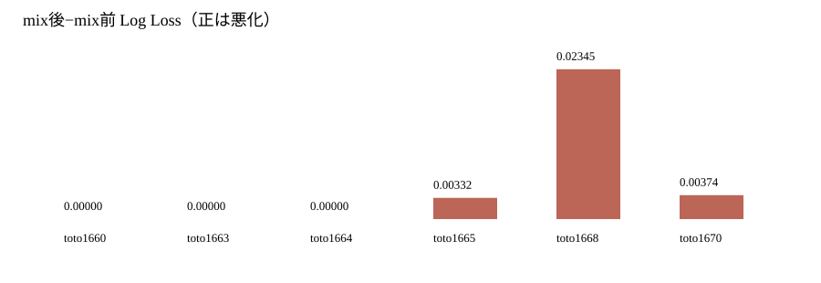

試合前原本A・6開催78試合／正式モデル変更なし

本番Next Modelの試合数逆算に脆弱性があり、順位表との不一致47/156を確認した。転記されたxG・xGA値自体は保存statsと156/156で一致。xG収録期間・分母の対応が確定していないため、順位表を正しい分母として正式に置換していない。mixは39試合で適用され15改善・24悪化。今回、新係数・修正済みと称する予測・10口・正式変更は0。
forecast_pipeline.build_next_probabilities → expected_goals.base_lambdas_v1 → _attack_rate_v1 → _games_from_xga が本番経路。n=round(累積被xG/平均被xG)、攻撃=(得点率+xG総量/n)/2、守備=(失点率+平均被xG)/2、λH=sqrt(H攻撃×A守備)。研究コードは同じ関数を使用。零・欠損ではfallbackがある一方、現行preflightは非正値を拒否する。研究再現だけの問題ではない。
20_update_stats.pyはJリーグ公式stats/clubページの表示値をfloatへ変換。J1/J2別、2026は2026-27 URL優先、旧URLfallbackあり。J2は従来j2j3源を設定し現行URLはj2、チーム集合で絞る。数値を自前集計したxGではない。指標ごとの試合数・収録開始終了・取得URLをCSVには残さない。延期/未消化は統計側に委ねており、節番号を消化数と同一視できない。
対象6開催は2026-10-10〜11-07の保存stats。全156側で同日順位表regular_2026_27の消化数と照合でき、未来stats日付は0、保存値とstatsファイルのxG3項目の不一致0。これは対象試合後の値が使われた証拠が無いという確認であり、指標内部の収録終了時刻まで証明したものではない。試合前原本Aのhashを再確認。最新HTMLは過去の証拠に流用しない。
順位表は直接得られる競技の消化試合数。ただしxGがその全試合を収録している証拠は別途必要。ここで47件をすべて誤分母確定とはしない。
| round | league | team_inputs | mismatches | games_min | games_max |
|---|---|---|---|---|---|
| toto1660 | j1 | 16 | 0 | 8 | 8 |
| toto1660 | j2 | 10 | 2 | 9 | 9 |
| toto1663 | j1 | 20 | 3 | 9 | 9 |
| toto1663 | j2 | 6 | 3 | 10 | 10 |
| toto1664 | j1 | 20 | 4 | 10 | 10 |
| toto1664 | j2 | 6 | 2 | 11 | 11 |
| toto1665 | j1 | 20 | 9 | 11 | 11 |
| toto1665 | j2 | 6 | 1 | 12 | 12 |
| toto1668 | j1 | 20 | 8 | 12 | 12 |
| toto1668 | j2 | 6 | 4 | 13 | 13 |
| toto1670 | j1 | 20 | 8 | 13 | 13 |
| toto1670 | j2 | 6 | 3 | 15 | 15 |
例：被xG14.0、平均1.2なら本番逆算は12試合。しかし同日順位表の柏は11試合で、14/11=1.2727。平均値が小数1桁切捨てなら1.2と両立する。0.1刻み四捨五入を仮定した候補集合と切捨てを仮定した候補集合をCSVで併記した。どちらも表示仕様の確定ではない。152/156は順位表分母と切捨て表示で整合するが、FC東京の4例は別途調査が必要。xG/被xGそれぞれの直接分母は保存されておらず、同一分母も未証明。
| round | match_no | team | xga_total | xga_display_rate | inferred_games | standings_games | nearest_candidates | floor_candidates |
|---|---|---|---|---|---|---|---|---|
| toto1660 | 10 | 藤枝 | 10.700000 | 1.100000 | 10 | 9 | 10 | 9 |
| toto1660 | 13 | 秋田 | 13.300000 | 1.400000 | 10 | 9 | NaN | 9 |
| toto1663 | 3 | ＦＣ東京 | 8.900000 | 0.900000 | 10 | 9 | 10 | 9 |
| toto1663 | 8 | 岡山 | 8.700000 | 0.900000 | 10 | 9 | 10 | 9 |
| toto1663 | 9 | 町田 | 10.600000 | 1.100000 | 10 | 9 | 10 | 9 |
| toto1663 | 11 | 札幌 | 12.900000 | 1.200000 | 11 | 10 | 11 | 10 |
| toto1663 | 11 | 秋田 | 13.800000 | 1.300000 | 11 | 10 | 11 | 10 |
| toto1663 | 12 | 新潟 | 13.700000 | 1.300000 | 11 | 10 | 11 | 10 |
| toto1664 | 3 | 広島 | 7.400000 | 0.700000 | 11 | 10 | 10,11 | 10 |
| toto1664 | 6 | 清水 | 12.900000 | 1.200000 | 11 | 10 | 11 | 10 |
| toto1664 | 7 | 水戸 | 15.800000 | 1.500000 | 11 | 10 | NaN | 10 |
| toto1664 | 10 | 神戸 | 11.800000 | 1.100000 | 11 | 10 | 11 | 10 |
| toto1664 | 11 | 今治 | 19.600000 | 1.700000 | 12 | 11 | NaN | 11 |
| toto1664 | 12 | 徳島 | 15.300000 | 1.300000 | 12 | 11 | 12 | 11 |
| toto1665 | 1 | 広島 | 8.600000 | 0.700000 | 12 | 11 | 12,13 | 11,12 |
| toto1665 | 2 | 柏 | 14.000000 | 1.200000 | 12 | 11 | 12 | 11 |
| toto1665 | 3 | 町田 | 11.800000 | 1.000000 | 12 | 11 | 12 | 11 |
| toto1665 | 4 | C大阪 | 18.500000 | 1.600000 | 12 | 11 | NaN | 11 |
| toto1665 | 4 | 千葉 | 16.400000 | 1.400000 | 12 | 11 | 12 | 11 |
| toto1665 | 5 | FC東京 | 10.400000 | 1.000000 | 10 | 11 | 10,11 | 10 |
| toto1665 | 6 | 福岡 | 13.800000 | 1.200000 | 12 | 11 | 11,12 | 11 |
| toto1665 | 9 | 川崎F | 15.200000 | 1.300000 | 12 | 11 | 12 | 11 |
| toto1665 | 10 | 長崎 | 16.100000 | 1.400000 | 12 | 11 | NaN | 11 |
| toto1665 | 13 | 札幌 | 16.500000 | 1.300000 | 13 | 12 | 13 | 12 |
| toto1668 | 1 | FC東京 | 11.100000 | 1.000000 | 11 | 12 | 11 | 11 |
| toto1668 | 2 | 広島 | 9.400000 | 0.700000 | 13 | 12 | 13,14 | 12,13 |
| toto1668 | 3 | 名古屋 | 16.300000 | 1.300000 | 13 | 12 | 13 | 12 |
| toto1668 | 5 | 柏 | 16.300000 | 1.300000 | 13 | 12 | 13 | 12 |
| toto1668 | 6 | 清水 | 17.800000 | 1.400000 | 13 | 12 | 13 | 12 |
| toto1668 | 9 | 町田 | 12.800000 | 1.000000 | 13 | 12 | 13 | 12 |
| toto1668 | 9 | G大阪 | 19.000000 | 1.500000 | 13 | 12 | 13 | 12 |
| toto1668 | 10 | 川崎F | 16.600000 | 1.300000 | 13 | 12 | 13 | 12 |
| toto1668 | 12 | 新潟 | 18.000000 | 1.300000 | 14 | 13 | 14 | 13 |
| toto1668 | 12 | 富山 | 13.500000 | 1.000000 | 14 | 13 | 13,14 | 13 |
| toto1668 | 13 | 宮崎 | 16.400000 | 1.200000 | 14 | 13 | 14 | 13 |
| toto1668 | 13 | 大分 | 15.400000 | 1.100000 | 14 | 13 | 14 | 13,14 |
| toto1670 | 2 | 岡山 | 14.900000 | 1.100000 | 14 | 13 | 13,14 | 13 |
| toto1670 | 4 | 鹿島 | 14.200000 | 1.000000 | 14 | 13 | 14,15 | 13,14 |
| toto1670 | 5 | 柏 | 17.800000 | 1.300000 | 14 | 13 | 14 | 13 |
| toto1670 | 6 | 京都 | 20.700000 | 1.500000 | 14 | 13 | 14 | 13 |
| toto1670 | 7 | 神戸 | 16.400000 | 1.200000 | 14 | 13 | 14 | 13 |
| toto1670 | 8 | G大阪 | 20.600000 | 1.500000 | 14 | 13 | 14 | 13 |
| toto1670 | 9 | 水戸 | 20.600000 | 1.500000 | 14 | 13 | 14 | 13 |
| toto1670 | 10 | 広島 | 9.500000 | 0.700000 | 14 | 13 | 13,14 | 12,13 |
| toto1670 | 11 | 徳島 | 19.400000 | 1.200000 | 16 | 15 | 16 | 15,16 |
| toto1670 | 11 | 宮崎 | 17.400000 | 1.100000 | 16 | 15 | 16 | 15 |
| toto1670 | 13 | 鳥栖 | 16.000000 | 1.000000 | 16 | 15 | 16 | 15,16 |
同じ収録範囲と仮定し順位表分母だけへ置換した試算。基礎λの絶対差最大はH 0.038814、A 0.044262。LAB・欠場・mixを保存条件で固定した確率差最大はH 0.5770、D 0.3498、A 0.7171ポイント。正しい入力が確定した再予測ではないため実績比較で採否を決めず、10口へ接続しない。平均被xGは今回変更していない。
| round | match_no | card | delta_base_H | delta_base_A | delta_P_H | delta_P_D | delta_P_A |
|---|---|---|---|---|---|---|---|
| toto1660 | 1 | C大阪－横浜ＦM | 0.000000 | 0.000000 | 0.000000 | 0.000000 | 0.000000 |
| toto1660 | 2 | ＦＣ東京－浦和 | 0.000000 | 0.000000 | 0.000000 | 0.000000 | 0.000000 |
| toto1660 | 3 | 福岡－岡山 | 0.000000 | 0.000000 | 0.000000 | 0.000000 | 0.000000 |
| toto1660 | 4 | 千葉－長崎 | 0.000000 | 0.000000 | 0.000000 | 0.000000 | 0.000000 |
| toto1660 | 5 | 水戸－清水 | 0.000000 | 0.000000 | 0.000000 | 0.000000 | 0.000000 |
| toto1660 | 6 | 京都－町田 | 0.000000 | 0.000000 | 0.000000 | 0.000000 | 0.000000 |
| toto1660 | 7 | 東京V－広島 | 0.000000 | 0.000000 | 0.000000 | 0.000000 | 0.000000 |
| toto1660 | 8 | 川崎F－名古屋 | 0.000000 | 0.000000 | 0.000000 | 0.000000 | 0.000000 |
| toto1660 | 9 | 甲府－栃木C | 0.000000 | 0.000000 | 0.000000 | 0.000000 | 0.000000 |
| toto1660 | 10 | 鳥栖－藤枝 | 0.000000 | 0.026462 | -0.004146 | -0.001218 | 0.005365 |
| toto1660 | 11 | 徳島－今治 | 0.000000 | 0.000000 | 0.000000 | 0.000000 | 0.000000 |
| toto1660 | 12 | 山形－仙台 | 0.000000 | 0.000000 | 0.000000 | 0.000000 | 0.000000 |
| toto1660 | 13 | いわき－秋田 | 0.000000 | 0.032855 | -0.004660 | -0.001677 | 0.006337 |
| toto1663 | 1 | 清水－G大阪 | 0.000000 | 0.000000 | 0.000000 | 0.000000 | 0.000000 |
| toto1663 | 2 | 千葉－横浜ＦM | 0.000000 | 0.000000 | 0.000000 | 0.000000 | 0.000000 |
| toto1663 | 3 | 東京V－ＦＣ東京 | 0.000000 | 0.039107 | -0.003674 | -0.003498 | 0.007171 |
| toto1663 | 4 | C大阪－川崎F | 0.000000 | 0.000000 | 0.000000 | 0.000000 | 0.000000 |
| toto1663 | 5 | 鹿島－長崎 | 0.000000 | 0.000000 | 0.000000 | 0.000000 | 0.000000 |
| toto1663 | 6 | 広島－京都 | 0.000000 | 0.000000 | 0.000000 | 0.000000 | 0.000000 |
| toto1663 | 7 | 水戸－浦和 | 0.000000 | 0.000000 | 0.000000 | 0.000000 | 0.000000 |
| toto1663 | 8 | 岡山－神戸 | 0.028083 | 0.000000 | 0.005765 | -0.001120 | -0.004645 |
| toto1663 | 9 | 町田－福岡 | 0.031508 | 0.000000 | 0.005770 | -0.001890 | -0.003880 |
| toto1663 | 10 | 柏－名古屋 | 0.000000 | 0.000000 | 0.000000 | 0.000000 | 0.000000 |
| toto1663 | 11 | 札幌－秋田 | 0.025641 | 0.028730 | 0.001151 | -0.002659 | 0.001507 |
| toto1663 | 12 | 大分－新潟 | 0.000000 | 0.023411 | -0.003897 | -0.001114 | 0.005011 |
| toto1663 | 13 | 今治－八戸 | 0.000000 | 0.000000 | 0.000000 | 0.000000 | 0.000000 |
| toto1664 | 1 | 横浜FM－東京V | 0.000000 | 0.000000 | 0.000000 | 0.000000 | 0.000000 |
| toto1664 | 2 | 京都－鹿島 | 0.000000 | 0.000000 | 0.000000 | 0.000000 | 0.000000 |
| toto1664 | 3 | 長崎－広島 | 0.000000 | 0.044262 | -0.003505 | -0.003428 | 0.006934 |
| toto1664 | 4 | FC東京－柏 | 0.000000 | 0.000000 | 0.000000 | 0.000000 | 0.000000 |
| toto1664 | 5 | 名古屋－C大阪 | 0.000000 | 0.000000 | 0.000000 | 0.000000 | 0.000000 |
| toto1664 | 6 | 清水－町田 | 0.027963 | 0.000000 | 0.005612 | -0.000628 | -0.004984 |
| toto1664 | 7 | 岡山－水戸 | 0.000000 | 0.026688 | -0.004260 | -0.001004 | 0.005264 |
| toto1664 | 8 | 福岡－G大阪 | 0.000000 | 0.000000 | 0.000000 | 0.000000 | 0.000000 |
| toto1664 | 9 | 浦和－千葉 | 0.000000 | 0.000000 | 0.000000 | 0.000000 | 0.000000 |
| toto1664 | 10 | 川崎F－神戸 | 0.000000 | 0.035893 | -0.004966 | -0.001582 | 0.006548 |
| toto1664 | 11 | 仙台－今治 | 0.000000 | 0.022822 | -0.004217 | 0.000097 | 0.004120 |
| toto1664 | 12 | 徳島－八戸 | 0.026799 | 0.000000 | 0.005593 | -0.001646 | -0.003947 |
| toto1664 | 13 | 宮崎－秋田 | 0.000000 | 0.000000 | 0.000000 | 0.000000 | 0.000000 |
| toto1665 | 1 | 広島－清水 | 0.037410 | 0.000000 | 0.004957 | -0.002130 | -0.002827 |
| toto1665 | 2 | 鹿島－柏 | 0.000000 | 0.027829 | -0.003056 | -0.000570 | 0.003626 |
| toto1665 | 3 | 神戸－町田 | 0.000000 | 0.023694 | -0.002397 | -0.000911 | 0.003308 |
| toto1665 | 4 | C大阪－千葉 | 0.030955 | 0.028164 | 0.001214 | -0.002022 | 0.000808 |
| toto1665 | 5 | FC東京－水戸 | -0.038814 | 0.000000 | -0.005355 | 0.002442 | 0.002913 |
| toto1665 | 6 | 東京V－福岡 | 0.000000 | 0.030117 | -0.002893 | -0.001896 | 0.004788 |
| toto1665 | 7 | G大阪－京都 | 0.000000 | 0.000000 | 0.000000 | 0.000000 | 0.000000 |
| toto1665 | 8 | 名古屋－横浜FM | 0.000000 | 0.000000 | 0.000000 | 0.000000 | 0.000000 |
| toto1665 | 9 | 川崎F－岡山 | 0.028176 | 0.000000 | 0.003878 | -0.000907 | -0.002971 |
| toto1665 | 10 | 浦和－長崎 | 0.000000 | 0.025178 | -0.002922 | -0.000448 | 0.003369 |
| toto1665 | 11 | 秋田－今治 | 0.000000 | 0.000000 | 0.000000 | 0.000000 | 0.000000 |
| toto1665 | 12 | 鳥栖－八戸 | 0.000000 | 0.000000 | 0.000000 | 0.000000 | 0.000000 |
| toto1665 | 13 | 富山－札幌 | 0.000000 | 0.018907 | -0.002495 | -0.000198 | 0.002693 |
| toto1668 | 1 | 岡山－FC東京 | 0.000000 | -0.030658 | 0.002915 | 0.001623 | -0.004538 |
| toto1668 | 2 | 水戸－広島 | 0.000000 | 0.036820 | -0.001951 | -0.002249 | 0.004199 |
| toto1668 | 3 | 神戸－名古屋 | 0.000000 | 0.024984 | -0.003626 | -0.000514 | 0.004140 |
| toto1668 | 4 | 鹿島－C大阪 | 0.000000 | 0.000000 | 0.000000 | 0.000000 | 0.000000 |
| toto1668 | 5 | 柏－浦和 | 0.026144 | 0.000000 | 0.003347 | -0.000672 | -0.002676 |
| toto1668 | 6 | 京都－清水 | 0.000000 | 0.029818 | -0.003872 | -0.001096 | 0.004967 |
| toto1668 | 7 | 千葉－福岡 | 0.000000 | 0.000000 | 0.000000 | 0.000000 | 0.000000 |
| toto1668 | 8 | 長崎－東京V | 0.000000 | 0.000000 | 0.000000 | 0.000000 | 0.000000 |
| toto1668 | 9 | 町田－G大阪 | 0.026989 | 0.019969 | 0.000622 | -0.001305 | 0.000683 |
| toto1668 | 10 | 横浜FM－川崎F | 0.000000 | 0.025196 | -0.002980 | -0.000970 | 0.003950 |
| toto1668 | 11 | 仙台－大宮 | 0.000000 | 0.000000 | 0.000000 | 0.000000 | 0.000000 |
| toto1668 | 12 | 新潟－富山 | 0.017294 | 0.029111 | -0.000229 | -0.001574 | 0.001803 |
| toto1668 | 13 | 宮崎－大分 | 0.020069 | 0.021386 | 0.000680 | -0.001603 | 0.000923 |
| toto1670 | 1 | 清水－東京V | 0.000000 | 0.000000 | 0.000000 | 0.000000 | 0.000000 |
| toto1670 | 2 | 横浜FM－岡山 | 0.000000 | 0.021855 | -0.002839 | -0.000698 | 0.003537 |
| toto1670 | 3 | 福岡－長崎 | 0.000000 | 0.000000 | 0.000000 | 0.000000 | 0.000000 |
| toto1670 | 4 | FC東京－鹿島 | 0.000000 | 0.020092 | -0.002868 | -0.000338 | 0.003206 |
| toto1670 | 5 | 柏－川崎F | 0.024159 | 0.000000 | 0.003132 | -0.000550 | -0.002581 |
| toto1670 | 6 | 名古屋－京都 | 0.000000 | 0.021138 | -0.002820 | -0.000570 | 0.003390 |
| toto1670 | 7 | 神戸－浦和 | 0.029134 | 0.000000 | 0.004315 | -0.001254 | -0.003061 |
| toto1670 | 8 | G大阪－C大阪 | 0.025684 | 0.000000 | 0.003981 | -0.000897 | -0.003083 |
| toto1670 | 9 | 千葉－水戸 | 0.000000 | 0.021901 | -0.003094 | -0.000484 | 0.003578 |
| toto1670 | 10 | 町田－広島 | 0.000000 | 0.024290 | -0.002470 | -0.001235 | 0.003706 |
| toto1670 | 11 | 徳島－宮崎 | 0.016706 | 0.019491 | 0.000769 | -0.001620 | 0.000851 |
| toto1670 | 12 | 八戸－札幌 | 0.000000 | 0.000000 | 0.000000 | 0.000000 | 0.000000 |
| toto1670 | 13 | 鳥栖－富山 | 0.022018 | 0.000000 | 0.003483 | -0.000634 | -0.002849 |
fatigue=clip((H総疲労+A総疲労)/16,0,1)。weather=強雨1.0/雨0.35＋強風0.65を上限1、未取得はweather効果0と明示。f_effect=0.25×fatigue、w_effect=0.25×weather、mix=min(1−(1−f_effect)(1−w_effect),0.25)。final=(1−mix)raw+mix/3。確率の一様化であり、特定側やDへの現実の遷移確率ではない。λは変えない。
1660/1663/1664は適用なし39、1665/1668/1670は39適用。後者のmix範囲0.1459375〜0.25、22試合が上限。保存signalと係数から39/39再現。1665は係数列が未保存だが現行0.25と保存signalから一致（当時設定原本の証明とは分ける）。
| dimension | group | n | mix_mean | mix_min | mix_max | improved | worsened | LL_before | LL_after | delta_LL | Brier_before | Brier_after | delta_Brier | entropy_before |
|---|---|---|---|---|---|---|---|---|---|---|---|---|---|---|
| round | toto1660 | 13 | 0.000000 | 0.000000 | 0.000000 | 0 | 0 | 1.003760 | 1.003760 | 0.000000 | 0.601488 | 0.601488 | -0.000000 | 1.051406 |
| round | toto1663 | 13 | 0.000000 | 0.000000 | 0.000000 | 0 | 0 | 0.953131 | 0.953131 | 0.000000 | 0.562622 | 0.562622 | 0.000000 | 1.049296 |
| round | toto1664 | 13 | 0.000000 | 0.000000 | 0.000000 | 0 | 0 | 1.129401 | 1.129401 | 0.000000 | 0.685558 | 0.685558 | 0.000000 | 1.051813 |
| round | toto1665 | 13 | 0.247799 | 0.221381 | 0.250000 | 6 | 7 | 1.048177 | 1.051500 | 0.003323 | 0.626733 | 0.630841 | 0.004107 | 1.059340 |
| round | toto1668 | 13 | 0.218293 | 0.163906 | 0.250000 | 4 | 9 | 0.951516 | 0.974965 | 0.023450 | 0.567939 | 0.582483 | 0.014544 | 1.049608 |
| round | toto1670 | 13 | 0.218594 | 0.145937 | 0.250000 | 5 | 8 | 1.060399 | 1.064143 | 0.003744 | 0.638969 | 0.642229 | 0.003259 | 1.078135 |
| model_signature | absence_uncertainty | 26 | 0.233046 | 0.163906 | 0.250000 | 10 | 16 | 0.999846 | 1.013233 | 0.013386 | 0.597336 | 0.606662 | 0.009326 | 1.054474 |
| model_signature | early_score_model | 39 | 0.000000 | 0.000000 | 0.000000 | 0 | 0 | 1.028764 | 1.028764 | 0.000000 | 0.616556 | 0.616556 | 0.000000 | 1.050838 |
| model_signature | goal_rate_plus_style_policy | 13 | 0.218594 | 0.145937 | 0.250000 | 5 | 8 | 1.060399 | 1.064143 | 0.003744 | 0.638969 | 0.642229 | 0.003259 | 1.078135 |
| mix_band | 0 | 39 | 0.000000 | 0.000000 | 0.000000 | 0 | 0 | 1.028764 | 1.028764 | 0.000000 | 0.616556 | 0.616556 | 0.000000 | 1.050838 |
| mix_band | 0超〜0.20 | 9 | 0.173715 | 0.145937 | 0.199687 | 1 | 8 | 0.932092 | 0.956816 | 0.024723 | 0.550051 | 0.567988 | 0.017937 | 1.069056 |
| mix_band | 0.20超〜0.25未満 | 8 | 0.229684 | 0.204687 | 0.249688 | 3 | 5 | 0.953748 | 0.979865 | 0.026117 | 0.565730 | 0.582926 | 0.017196 | 1.042548 |
| mix_band | 0.25 | 22 | 0.250000 | 0.250000 | 0.250000 | 11 | 11 | 1.080108 | 1.078529 | -0.001579 | 0.652775 | 0.652131 | -0.000644 | 1.066827 |
13試合中9悪化・4改善。水戸－広島の実Aは66.24→58.15%、Log Loss+0.13031。一方、町田－G大阪の実Dは23.44→25.91%、−0.10036。正解結果のraw確率が1/3より高ければmixはその確率を下げ、Log Lossは悪化する。横浜FM－川崎Fの実Hは最高予測記号ではないがraw34.24%なのでmixによりわずかに悪化する。単なる最高予測の的中/外れとmix損益は一致しない。
| card | actual | mix | p_actual_before | p_actual_after | delta_log_loss | delta_brier |
|---|---|---|---|---|---|---|
| 岡山－FC東京 | A | 0.199687 | 0.481683 | 0.452060 | 0.063473 | 0.047371 |
| 水戸－広島 | A | 0.245938 | 0.662419 | 0.581485 | 0.130314 | 0.090656 |
| 神戸－名古屋 | H | 0.165937 | 0.444328 | 0.425910 | 0.042336 | 0.030929 |
| 鹿島－C大阪 | H | 0.190781 | 0.491745 | 0.461523 | 0.063428 | 0.047222 |
| 柏－浦和 | H | 0.250000 | 0.389884 | 0.375747 | 0.036935 | 0.022554 |
| 京都－清水 | H | 0.163906 | 0.370930 | 0.364768 | 0.016753 | 0.009993 |
| 千葉－福岡 | H | 0.250000 | 0.328003 | 0.329335 | -0.004055 | -0.007437 |
| 長崎－東京V | A | 0.250000 | 0.288165 | 0.299457 | -0.038438 | -0.030773 |
| 町田－G大阪 | D | 0.250000 | 0.234370 | 0.259111 | -0.100355 | -0.081751 |
| 横浜FM－川崎F | H | 0.170469 | 0.342403 | 0.340857 | 0.004526 | -0.000698 |
| 仙台－大宮 | A | 0.204687 | 0.316097 | 0.319625 | -0.011099 | -0.011686 |
| 新潟－富山 | A | 0.250000 | 0.486496 | 0.448205 | 0.081977 | 0.061149 |
| 宮崎－大分 | H | 0.246406 | 0.360978 | 0.354166 | 0.019051 | 0.011544 |
全78のLL差+0.005086、Brier差+0.003652。適用3開催はいずれも平均LL悪化。一方上限mix=.25群22試合のLL差は−0.001579で、強いmixほど悪いという結論ではない。予測entropyと実際の誤差は別。係数学習はtrain_uncertainty_calibration.pyがobservation_historyのp_home等を消費し、その作成器04_accumulate_observations.pyはprob_final等を優先。保存configの旧系列検証改善をNext専用の証拠に流用しない。旧規則で今回の予測は作っていない。
6開催単位の全6^6再標本化でLL差95%範囲は[0.0005537993373194659, 0.012832421302820684]。6群のみ、版差と無適用3開催を含む探索的集計で、将来への確実な効果とは扱わない。維持/廃止を今決めず後続の同一版raw/finalを対評価する。
基礎statsとLABの4xG率はチーム全会場合計/平均であり、列名_home/_awayは今回の対戦側への結合を意味し、ホーム専用・アウェー専用成績ではない。過去のホーム効果は全会場平均に混ざるが、次戦会場に条件付けた補正とは異なる。確認したNext経路には独立したHFA乗数はない。欠場の攻守差は会場係数ではなく、疲労/移動の情報はmixに入り方向を保持しない。相手守備力は基礎式に入る。したがって未評価の会場効果が残る可能性はあるが、明示項の欠如だけで過小予測原因と断定しない。
| dimension | group | n | H_expected | H_actual | A_expected | A_actual | predicted_goal_difference | actual_goal_difference | H_expected_results | H_actual_results | D_expected_results | D_actual_results | A_expected_results | A_actual_results |
|---|---|---|---|---|---|---|---|---|---|---|---|---|---|---|
| round | toto1660 | 13 | 16.047545 | 13 | 18.853153 | 13 | -2.805608 | 0 | 4.231655 | 5 | 3.272875 | 2 | 5.495471 | 6 |
| round | toto1663 | 13 | 17.900154 | 22 | 16.951975 | 21 | 0.948179 | 1 | 5.052759 | 5 | 3.270269 | 3 | 4.676972 | 5 |
| round | toto1664 | 13 | 17.629724 | 22 | 17.062019 | 18 | 0.567705 | 4 | 5.011007 | 6 | 3.284030 | 4 | 4.704963 | 3 |
| round | toto1665 | 13 | 18.583215 | 26 | 16.156639 | 11 | 2.426576 | 15 | 5.132487 | 7 | 3.556939 | 4 | 4.310574 | 2 |
| round | toto1668 | 13 | 17.310100 | 26 | 17.626832 | 18 | -0.316733 | 8 | 4.709859 | 7 | 3.496641 | 1 | 4.793500 | 5 |
| round | toto1670 | 13 | 16.962497 | 13 | 16.569358 | 16 | 0.393139 | -3 | 4.772352 | 3 | 3.625069 | 4 | 4.602578 | 6 |
| model_signature | absence_uncertainty | 26 | 35.893314 | 52 | 33.783471 | 29 | 2.109843 | 23 | 9.842346 | 14 | 7.053580 | 5 | 9.104074 | 7 |
| model_signature | early_score_model | 39 | 51.577423 | 57 | 52.867147 | 52 | -1.289724 | 5 | 14.295421 | 16 | 9.827173 | 9 | 14.877406 | 14 |
| model_signature | goal_rate_plus_style_policy | 13 | 16.962497 | 13 | 16.569358 | 16 | 0.393139 | -3 | 4.772352 | 3 | 3.625069 | 4 | 4.602578 | 6 |
| favorite | A | 34 | 38.472115 | 38 | 51.098197 | 50 | -12.626082 | -12 | 9.931399 | 11 | 8.902862 | 8 | 15.165739 | 15 |
| favorite | H | 44 | 65.961119 | 84 | 52.121779 | 47 | 13.839340 | 37 | 18.978720 | 22 | 11.602961 | 10 | 13.418319 | 12 |
全78でH104.43対122、A103.22対97。1665/1668を中心とした上振れと1670の下振れがある。元のPoisson変動、チーム構成、版差を切り分ける必要がある。goal_uncertainty.csvに得点比率のPoisson仮定区間と残差を保持。一試合の残差を真のλ誤差とみなさず、新HFA係数は導入しない。HDAの期待件数と実件数、固定確率帯校正も別CSVへ保存。
LAB元スナップショットの4指標×78=312値も一致。天候signal39件、外れ値の保存published/ordinary/weighted/used間の算術52件も一致（過去履歴の完全性を保証する検査とは別）。LABは基礎λとsqrt(LAB攻撃xG×相手被xG)のlog空間25%混合で78/78再現。相関したxG情報の二重利用になり得るが同じ補正を二度実行した計算誤りは見つからない。欠場は欠損flagを確認し、攻守影響上限0.5、相手守備欠場−自攻撃欠場に0.25を掛け、λをclip。適用39/39再現。
外れ値補正は直近5だけでなく、対象試合より前の全履歴の通常/加重平均差を公開率へ加える。各過去試合より前の自他成績から突出度を測る。得点/失点を対称処理し未来退場を推定しない。期間の異なる公開率に全履歴差を加える整合性は今後監査対象。今回は最新結果履歴で再実行せず1670の保存差分のみ利用。疲労/天候がNextのλにも直接入る重複は、この経路では確認していない。
| round | absence_status | team_inputs |
|---|---|---|
| toto1660 | 未適用・不明 | 26 |
| toto1663 | 未適用・不明 | 26 |
| toto1664 | 未適用・不明 | 26 |
| toto1665 | 取得済み・人数あり/人数不明 | 24 |
| toto1665 | 情報未取得 | 2 |
| toto1668 | 取得済み・人数あり/人数不明 | 16 |
| toto1668 | 情報未取得 | 10 |
| toto1670 | 取得済み・人数あり/人数不明 | 16 |
| toto1670 | 情報未取得 | 10 |
適用対象78側入力のうち22側は情報未取得として方向補正0、56側は取得済み。取得済みで人数0の例は今回なし。未取得を欠場者なしと解釈しない。欠場原本の取得timestampは保存予測にないため、原本Aが試合前であることと台帳完全性・復帰の正しさは別。日程/疲労の保存値は利用可能だが、upstream use_generic_fatigue_onlyには欠損を0埋めする経路があり、今後は欠損フラグを保存する。
LAB→最終λの比較は当該保存経路での欠場差（初期39は同一）。外れ値は最終λ保存差分を戻した13試合を比較し、下流LAB/欠場を含む経路の総影響。段階比較の改善と因果的効果を混同しない。基礎λがすでに外れ値調整済みの1670を未調整版と呼ばない。
| before | after | n | delta_LL | delta_Brier | delta_goal_NLL |
|---|---|---|---|---|---|
| LAB後 | 最終λ・mix前 | 78 | -0.002598 | -0.001703 | -0.005449 |
| 保存差分から外れ値補正前を復元 | 最終λ・mix前 | 13 | 0.003093 | 0.002802 | -0.010417 |
| 基礎λ | LAB後 | 78 | -0.000735 | -0.000826 | -0.000195 |
| 最終λ・mix前 | final | 78 | 0.005086 | 0.003652 | 0.000000 |
実績が良くなるから値を修正することはしない。今回判明した値の不一致、保存不足、校正仮説を分ける。
| 区分 | 項目 | 根拠 | 提案 |
|---|---|---|---|
| 確定・設計上の脆弱性 | 本番で丸め済みxGAから試合数を逆算 | 156側入力中47で同日順位表と不一致。正しいxG収録数との同一性は未確定。 | 収録試合数を取得・保存し、期間一致を確認して明示的分母へ移行する案。今回は変更しない |
| データ不足 | 集計期間・収録数・指標別取得時刻 | snapshotの日付はあるが、各指標の集計始終・xG収録率・ホーム/アウェー内訳なし。 | 取得URL、competition、指標別timestamp、period、coverage、gamesを保存 |
| 疑い | 平均xGA表示の丸め/更新不整合 | 順位表試合数で除した値の小数1桁切捨てと152/156が整合。FC東京の4側入力はこの説明から外れる。表示仕様未確認。 | 過去原HTML・公式の収録対象を確認。表示値の切捨てと断定しない |
| 確定・検証の適用範囲 | mix係数の学習系列がNext固有ではない | train_uncertainty_calibration.pyは観測履歴p_home等、作成器はprob_final等を優先。Next確率の検証成績とは扱えない。 | Next raw/finalを後続未使用開催で対比較。旧方式を予測規則として使わない |
| 疑い・校正 | ホーム側予測不足 | 104.43対122だが1670は16.96対13。明示的HFAはなく、全会場平均には歴史的効果が混在。 | 同一版・リーグ・会場別の校正を蓄積。今は一律係数なし |
| 確定・保存不足 | 欠場入力の時点・ゼロの意味 | 適用78側中22側はmissing。人数0を欠場なしと読み替えない。原本には欠場情報取得時刻なし。 | 台帳の観測時刻・復帰・完全性とhashを保存。missingはゼロとは別 |
| 疑い・統計的重複 | LABと基礎xGの情報重複 | 別取得系列でも両方xG。係数25%の統計的独立性を意味しない。数式再現は78/78。 | 共通試合・予測時点で両系列の期間と未使用期間の差分を評価 |
| 確定・比較範囲制約 | 外れ値補正の再現範囲 | 保存λ差分がある1670の13試合で比較。現行結果DBから過去入力を上書きしていない。 | 対象履歴ID/hashと各過去試合の利用可能時刻を保存 |
| 疑い・運用経路 | 上流stats解決の未来fallback | 11_prediction_01.pyは指定asof以下が無い時最新へfallback。78原本には未来stats日付なし。Next preflightは別途鮮度検査。 | 過去再現はfail-closedを検討。今回この経路を実行/修正していない |
正しいxG収録分母を独立に確定できておらず、入力修正採用0、研究用10口比較も今回は実施しない。分母の条件付き感度試算は修正分布の精度改善を証明しない。mixを事後的に外して券を選び直すこともしない。Sは保存済み探索仮説として維持。
1) 指標別の収録試合数・期間・取得時刻と公式消化数を同時保存。2) 元値と照合し分母だけの修正を研究用再計算。3) 同一Next版でraw/final、H/A校正、Sを未使用開催ごとに保存・事後評価。4) 十分な後続期間で補正の変更を判断。
独立CLI phase39_future_check.pyを用意。captureは13試合すべて試合前であること、出力未存在を確認して保存し、evaluateは試合IDで後日結果と一対一結合する。operator指定asof単独は時刻証明ではないので原本レジストリのtimestamp/hashも必要。本番から自動呼出しせず、予測/購入処理への影響なし。新しい校正モデルの学習なし。